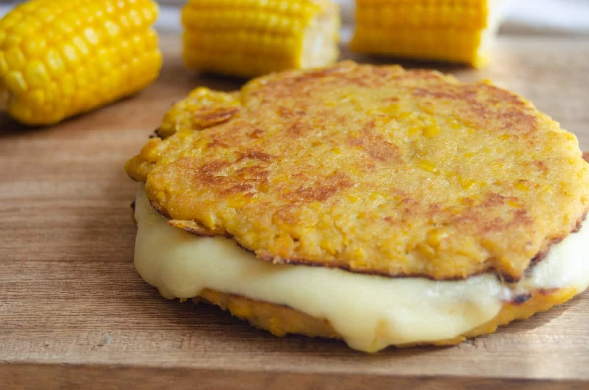

Arepas de choclo
La arepa de choclo se hace con maíz tierno, por eso es dulce y suave. Se encuentra en las carreteras y plazas de todo el país, casi siempre con una tajada de queso derretida encima.
- Tiempo: 30 min
- Porciones: 6 arepas
- Dificultad: Fácil

Doradas por fuera y húmedas por dentro: así debe quedar una buena arepa de choclo.
Ingredientes
- 3 tazas de maíz tierno desgranado (choclo)
- 1/2 taza de leche
- 1/2 taza de harina de maíz precocida
- 2 cucharadas de azúcar
- 1 pizca de sal
- 2 cucharadas de mantequilla derretida
- Queso campesino o mozzarella en tajadas
- Mantequilla para la sartén
Preparación
- Licúa el maíz con la leche hasta obtener una mezcla espesa. No la licúes demasiado: es mejor que queden trocitos de maíz.
- Pasa la mezcla a un recipiente y agrega la harina, el azúcar, la sal y la mantequilla derretida. Revuelve bien.
- Deja reposar la masa 10 minutos para que la harina absorba el líquido. Debe quedar como una masa de pancakes espesa.
- Calienta una sartén antiadherente con un poco de mantequilla a fuego medio-bajo.
- Vierte porciones de masa formando arepas de 1 cm de grosor. Cocina de 4 a 5 minutos por lado, hasta que estén doradas.
- Pon una tajada de queso encima, tapa la sartén un minuto para que se derrita y sirve caliente.
Míralo en video
Video: “Arepa de choclo colombiana”, canal ¿Como lo hago? en YouTube.